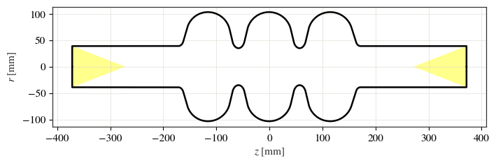
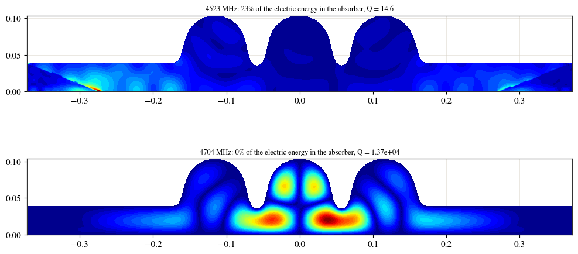
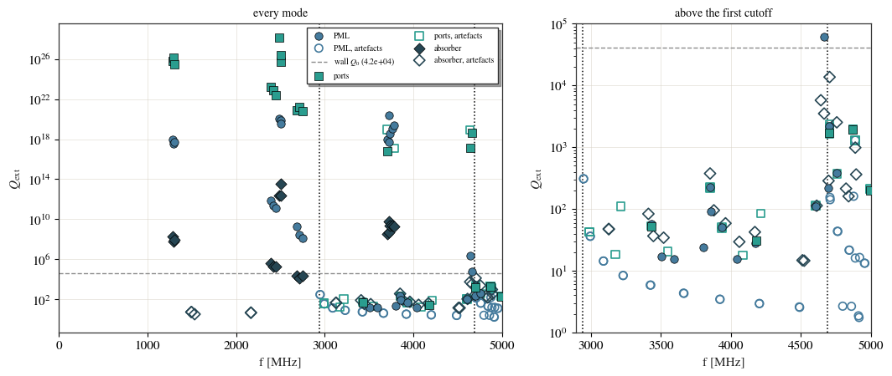
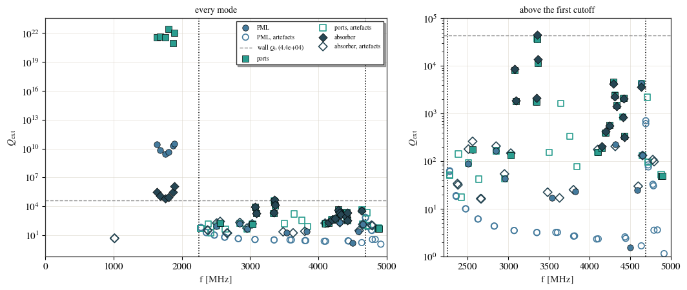
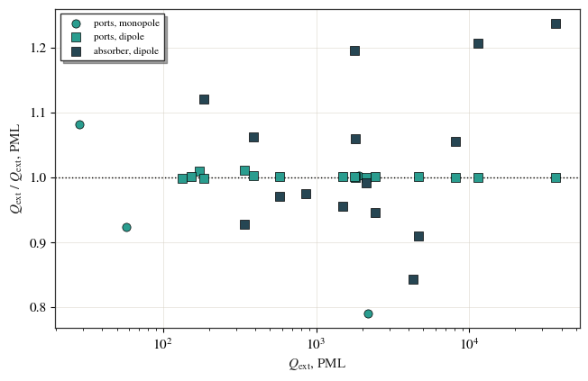

Three ways to compute the external Q¶
A mode whose frequency lies above a beam-pipe cutoff does not stay in the cavity. It
propagates out along the pipe, and the rate at which it does is the external quality
factor \(Q_{\rm ext}\). An eigenmode solve with closed pipe ends cannot see this: the end
wall reflects the wave straight back. To get \(Q_{\rm ext}\) the pipe has to end in
something that lets the energy leave, and cavsim2d can do that three ways. Two of them
are boundary conditions, set like any other in eigenmode_config['boundary_conditions'].
method |
how the energy leaves |
how to run it |
\(Q_{\rm ext}\) column |
|---|---|---|---|
PML |
a complex-stretched absorbing layer on each pipe end |
|
|
waveguide ports |
the exact modal impedance of the pipe, a transparent boundary |
|
|
lossy absorber |
a physical absorbing cone in the pipe, ends closed |
|
|
The PML is the default open boundary. The three share nothing but the cavity, so where they agree the answer is not an artefact of any one of them, and where they disagree the reason is worth knowing. This example solves the same TESLA 3-cell cavity all three ways up to 5 GHz, for the monopole and the dipole modes.
import os
import tempfile
import warnings
import numpy as np
import pandas as pd
import matplotlib.pyplot as plt
from scipy.special import jn_zeros, jnp_zeros
from cavsim2d import EllipticalCavity, Beampipe
from cavsim2d.utils.style import apply_style, WARM
apply_style() # the house publication style
WORK = tempfile.mkdtemp() # docs runs leave nothing behind
C0 = 299_792_458.0
# A B a b Ri L Req [mm]
MIDCELL = [42.00, 42.00, 12.0, 19.0, 35.0, 57.6520, 103.3536]
ENDCELL_L = [40.34, 40.34, 10.0, 13.5, 39.0, 55.7251, 103.3536]
ENDCELL_R = [42.00, 42.00, 9.0, 12.8, 39.0, 56.8407, 103.3536]
R_PIPE = ENDCELL_L[4] # beam pipe radius [mm]
PIPES = (0.20, 0.30) # the two beam pipe lengths [m]
F_MAX = 5000 # analysis band [MHz]
MESH = {'h': 12, 'p': 3}
POLS = ['monopole', 'dipole']
N_MODES = 70 # per polarisation: enough to pass F_MAX
def pipe_cutoffs(m):
"""TM_mn and TE_mn cutoffs of the beam pipe below F_MAX [MHz]."""
x = list(jn_zeros(m, 3)) + list(jnp_zeros(m, 3))
f = sorted(xi * C0 / (2 * np.pi * R_PIPE * 1e-3) * 1e-6 for xi in x)
return [fi for fi in f if fi < F_MAX]
CUTOFFS = {0: pipe_cutoffs(0), 1: pipe_cutoffs(1)}
for m, name in ((0, 'monopole'), (1, 'dipole')):
print(f'{name:9} pipe cutoffs below {F_MAX:.0f} MHz: '
+ ', '.join(f'{f:.0f}' for f in CUTOFFS[m]))
def tesla(name, pipe_length):
cav = EllipticalCavity(3, MIDCELL, ENDCELL_L, ENDCELL_R, beampipe='both', name=name)
cav.set_workspace(os.path.join(WORK, name))
cav.beampipe_length = pipe_length
return cav
def solve(name, pipe_length, n_modes=N_MODES, cav=None, **config):
"""Solve both polarisations of the cavity with this pipe length."""
cav = cav or tesla(name, pipe_length)
cav.eigenmode.run(dict({'polarisation': POLS, 'n_modes': n_modes,
'beampipe_length': pipe_length, 'mesh_config': MESH},
**config))
return cav
monopole pipe cutoffs below 5000 MHz: 2942, 4688
dipole pipe cutoffs below 5000 MHz: 2253, 4688
The monopole has two cutoffs here, not one. A monopole TM mode can only radiate into the TM\(_{01}\) pipe mode and a monopole TE mode only into TE\(_{01}\), whose cutoff is higher. A dipole mode radiates into TE\(_{11}\), the lowest pipe mode of all, and above the second cutoff into TM\(_{11}\) as well.
1. Telling cavity modes from pipe modes¶
Every method returns two kinds of mode above a cutoff: resonances of the cavity, and
standing waves of the pipe and its termination that happen to leak. They look alike in a
results table. The test that separates them is the same for all three methods: solve
again with a longer pipe. A cavity mode does not care how long the pipe is, so its
frequency stays put; a pipe mode moves. cav.eigenmode.classify_modes(other) does the
matching and returns the verdict with the evidence behind it. It is the best
discriminant available, and it is not perfect: a few per cent of modes can be
misclassified either way.
Q is only a tie-breaker in that test. The \(Q\) of a mode close to a cutoff converges
slowly with pipe length, because the termination still reaches its evanescent tail, so a
genuine mode may keep its frequency while its \(Q\) drifts.
2. PML: an absorbing layer on each pipe end¶
boundary_conditions='oo' attaches a perfectly matched layer to both pipe ends. The
eigenvalue becomes complex, and its imaginary part is the rate at which the mode loses
energy through the pipes:
pml = [solve(f'pml_{int(p * 1e3)}', p, boundary_conditions='oo') for p in PIPES]
3. Waveguide ports¶
boundary_conditions='port' terminates each pipe in its own modal impedance, with
n_port_modes (default 3) TM and TE pipe modes of the solve’s azimuthal order at each
end: TM\(_{01}\) to TM\(_{03}\) and TE\(_{01}\) to TE\(_{03}\) in the monopole run, TE\(_{11}\) to
TE\(_{13}\) and TM\(_{11}\) to TM\(_{13}\) in the dipole run, twelve per run. A mode of order
\(m\) couples only to pipe modes of the same \(m\), so TE\(_{11}\) belongs to the dipole run
and has no overlap with a monopole mode. Up to 5 GHz TM\(_{01}\) and TE\(_{01}\) propagate in
the monopole run, TE\(_{11}\) and TM\(_{11}\) in the dipole run; the rest are evanescent.
Below its cutoff a pipe mode does not propagate and the port adds only a reactance, so a
trapped mode is pulled in frequency but not damped. That is exact.
Above a cutoff the port impedance depends on the frequency being solved for, which makes the eigenproblem nonlinear. The solver evaluates the impedance at each mode’s closed-cavity frequency and solves once. The run warns about every mode this affects; section 6 shows what it costs.
ports = [solve(f'ports_{int(p * 1e3)}', p, boundary_conditions='port') for p in PIPES]
C:\Users\Soske\Documents\git_projects\cavsim2d\cavsim2d\processes\eigenmode.py:156: UserWarning: 58 of 70 port modes (monopole) lie above the lowest pipe cutoff, 2942 MHz. Their Q_ext is a single-pass estimate, with the pipe impedance frozen at the closed-cavity frequency, and that pass also produces spurious resonances (Q up to ~150 in a straight, matched pipe). Below the cutoff the port result is exact. For radiating modes use boundary_conditions='oo' and keep the modes that survive a change of pipe length (cav.eigenmode.stable_modes).
_run_ngsolve(cav, eigenmode_config)
C:\Users\Soske\Documents\git_projects\cavsim2d\cavsim2d\processes\eigenmode.py:156: UserWarning: 64 of 70 port modes (dipole) lie above the lowest pipe cutoff, 2253 MHz. Their Q_ext is a single-pass estimate, with the pipe impedance frozen at the closed-cavity frequency, and that pass also produces spurious resonances (Q up to ~150 in a straight, matched pipe). Below the cutoff the port result is exact. For radiating modes use boundary_conditions='oo' and keep the modes that survive a change of pipe length (cav.eigenmode.stable_modes).
_run_ngsolve(cav, eigenmode_config)
4. A lossy absorber in the pipe¶
The third way needs no special boundary: put a real absorber in each pipe and close the ends. Here it is a solid cone of lossy ceramic, full-bore at the end wall and tapering to a point on the axis, so that no wave slips past it. The damping is then ordinary dielectric loss, solved by the complex eigensolver.
The absorber brings resonances of its own. The field tells them apart directly: every
run with a material region reports U_frac_<region> [], the share of the mode’s stored
electric energy inside that region. A cavity mode keeps almost all of its energy in the
vacuum; a resonance of the absorber lives in the ceramic.
CONE = {'length': 100.0, 'eps_r': 10.0, 'tan_delta': 0.3, 'maxh': 4.0} # mm
def absorber_cavity(pipe_length):
cav = tesla(f'absorber_{int(pipe_length * 1e3)}', pipe_length)
pipe_end = max(z for z, _ in cav.profile(beampipe_length=pipe_length).points) * 1e3
for side, name in ((+1, 'absorber_right'), (-1, 'absorber_left')):
base = side * pipe_end
cav.add_dielectric(name, CONE['eps_r'], tan_delta=CONE['tan_delta'],
maxh=CONE['maxh'],
points=[(base - side * CONE['length'], 0.0),
(base, R_PIPE), (base, 0.0)])
return cav
absorber = [solve(None, p, n_modes=90, cav=absorber_cavity(p),
boundary_conditions='mm') for p in PIPES]
absorber[0].plot('geometry', mirror=True)
plt.show()
C:\Users\Soske\Documents\git_projects\cavsim2d\cavsim2d\solvers\NGSolve\eigen_ngsolve.py:1795: UserWarning: lossy eigensolve: 45 distinct mode(s) for 70 requested — the pooled Arnoldi pairs did not contain enough distinct eigenvalues. The modes are renumbered, so check 'mode_of_interest' against the reported frequencies; raising eigenmode_config['arnoldi_vectors'] (currently 6) may separate them.
return self._solve_lossy_system(mesh, mesh_p, m_pol, materials, lam_shifts,
C:\Users\Soske\Documents\git_projects\cavsim2d\cavsim2d\solvers\NGSolve\eigen_ngsolve.py:1795: UserWarning: lossy eigensolve: 41 distinct mode(s) for 84 requested — the pooled Arnoldi pairs did not contain enough distinct eigenvalues. The modes are renumbered, so check 'mode_of_interest' against the reported frequencies; raising eigenmode_config['arnoldi_vectors'] (currently 6) may separate them.
return self._solve_lossy_system(mesh, mesh_p, m_pol, materials, lam_shifts,
C:\Users\Soske\Documents\git_projects\cavsim2d\cavsim2d\solvers\NGSolve\eigen_ngsolve.py:1795: UserWarning: lossy eigensolve: 48 distinct mode(s) for 73 requested — the pooled Arnoldi pairs did not contain enough distinct eigenvalues. The modes are renumbered, so check 'mode_of_interest' against the reported frequencies; raising eigenmode_config['arnoldi_vectors'] (currently 6) may separate them.
return self._solve_lossy_system(mesh, mesh_p, m_pol, materials, lam_shifts,
C:\Users\Soske\Documents\git_projects\cavsim2d\cavsim2d\solvers\NGSolve\eigen_ngsolve.py:1795: UserWarning: lossy eigensolve: 46 distinct mode(s) for 84 requested — the pooled Arnoldi pairs did not contain enough distinct eigenvalues. The modes are renumbered, so check 'mode_of_interest' against the reported frequencies; raising eigenmode_config['arnoldi_vectors'] (currently 6) may separate them.
return self._solve_lossy_system(mesh, mesh_p, m_pol, materials, lam_shifts,

def absorber_share(df):
return df['U_frac_absorber_left []'] + df['U_frac_absorber_right []']
a0 = absorber[0].eigenmode.qois_df.sort_values('freq [MHz]').reset_index(drop=True)
a0['in absorber'] = absorber_share(a0)
a0['1 / (Q tan_delta)'] = 1.0 / (a0['Q_eig []'] * CONE['tan_delta'])
table = a0[(a0['freq [MHz]'] <= F_MAX)][['m', 'freq [MHz]', 'Q_eig []', 'in absorber',
'1 / (Q tan_delta)']]
table.style.format({'freq [MHz]': '{:.1f}', 'Q_eig []': '{:.3g}', 'in absorber': '{:.3f}',
'1 / (Q tan_delta)': '{:.3f}'}).hide(axis='index')
| m | freq [MHz] | Q_eig [] | in absorber | 1 / (Q tan_delta) |
|---|---|---|---|---|
| 1 | 1012.8 | 4.69 | 0.719 | 0.711 |
| 1 | 1013.3 | 4.7 | 0.717 | 0.709 |
| 0 | 1281.7 | 2.13e+08 | 0.000 | 0.000 |
| 0 | 1293.8 | 6.45e+07 | 0.000 | 0.000 |
| 0 | 1300.0 | 9.18e+07 | 0.000 | 0.000 |
| 0 | 1495.2 | 5.59 | 0.601 | 0.596 |
| 0 | 1495.5 | 5.6 | 0.600 | 0.595 |
| 0 | 1531.9 | 3.43 | 0.994 | 0.973 |
| 1 | 1632.5 | 3.19e+05 | 0.000 | 0.000 |
| 1 | 1678.9 | 1.11e+05 | 0.000 | 0.000 |
| 1 | 1753.5 | 6.7e+04 | 0.000 | 0.000 |
| 1 | 1809.1 | 8.56e+04 | 0.000 | 0.000 |
| 1 | 1869.4 | 2.96e+05 | 0.000 | 0.000 |
| 1 | 1885.7 | 1.16e+06 | 0.000 | 0.000 |
| 0 | 2167.2 | 4.84 | 0.696 | 0.688 |
| 0 | 2167.2 | 4.84 | 0.696 | 0.689 |
| 1 | 2375.4 | 33.9 | 0.098 | 0.098 |
| 1 | 2381.5 | 31.8 | 0.105 | 0.105 |
| 0 | 2391.2 | 4.11e+05 | 0.000 | 0.000 |
| 0 | 2420.6 | 1.88e+05 | 0.000 | 0.000 |
| 0 | 2450.9 | 1.83e+05 | 0.000 | 0.000 |
| 0 | 2488.1 | 2.39e+12 | 0.000 | 0.000 |
| 0 | 2500.6 | 3.27e+13 | 0.000 | 0.000 |
| 0 | 2506.7 | 2.37e+12 | 0.000 | 0.000 |
| 1 | 2509.7 | 179 | 0.019 | 0.019 |
| 1 | 2561.5 | 261 | 0.013 | 0.013 |
| 1 | 2660.1 | 16.4 | 0.204 | 0.204 |
| 1 | 2668.5 | 16.3 | 0.205 | 0.204 |
| 0 | 2680.5 | 2.51e+04 | 0.000 | 0.000 |
| 0 | 2712.3 | 1.25e+04 | 0.000 | 0.000 |
| 0 | 2754.6 | 2.22e+04 | 0.000 | 0.000 |
| 1 | 2850.5 | 207 | 0.016 | 0.016 |
| 1 | 2953.6 | 54.1 | 0.062 | 0.062 |
| 1 | 3031.3 | 148 | 0.023 | 0.023 |
| 1 | 3077.0 | 8.6e+03 | 0.000 | 0.000 |
| 1 | 3090.2 | 1.9e+03 | 0.002 | 0.002 |
| 0 | 3127.5 | 47.6 | 0.070 | 0.070 |
| 0 | 3128.4 | 47.1 | 0.071 | 0.071 |
| 1 | 3345.3 | 2.11e+03 | 0.002 | 0.002 |
| 1 | 3352.6 | 4.54e+04 | 0.000 | 0.000 |
| 1 | 3361.8 | 1.37e+04 | 0.000 | 0.000 |
| 0 | 3410.8 | 83.4 | 0.040 | 0.040 |
| 0 | 3446.4 | 36.6 | 0.091 | 0.091 |
| 1 | 3484.1 | 22.3 | 0.149 | 0.149 |
| 0 | 3519.4 | 34.3 | 0.097 | 0.097 |
| 1 | 3630.6 | 17 | 0.196 | 0.196 |
| 0 | 3702.0 | 3.77e+08 | 0.000 | 0.000 |
| 0 | 3726.7 | 6.32e+09 | 0.000 | 0.000 |
| 0 | 3728.7 | 4.76e+08 | 0.000 | 0.000 |
| 0 | 3738.4 | 2.27e+09 | 0.000 | 0.000 |
| 0 | 3762.8 | 2.37e+09 | 0.000 | 0.000 |
| 0 | 3784.8 | 2.09e+09 | 0.000 | 0.000 |
| 1 | 3802.1 | 25.1 | 0.133 | 0.133 |
| 0 | 3850.8 | 376 | 0.009 | 0.009 |
| 0 | 3878.0 | 95.2 | 0.035 | 0.035 |
| 0 | 3961.1 | 58.7 | 0.057 | 0.057 |
| 0 | 4059.7 | 29.5 | 0.113 | 0.113 |
| 1 | 4100.0 | 176 | 0.019 | 0.019 |
| 1 | 4147.8 | 208 | 0.016 | 0.016 |
| 0 | 4170.6 | 42.4 | 0.079 | 0.079 |
| 1 | 4194.6 | 415 | 0.008 | 0.008 |
| 1 | 4248.3 | 562 | 0.006 | 0.006 |
| 1 | 4289.4 | 4.24e+03 | 0.001 | 0.001 |
| 1 | 4311.5 | 2.28e+03 | 0.001 | 0.001 |
| 1 | 4316.1 | 205 | 0.016 | 0.016 |
| 1 | 4334.9 | 1.43e+03 | 0.002 | 0.002 |
| 1 | 4409.3 | 828 | 0.004 | 0.004 |
| 1 | 4421.1 | 2.09e+03 | 0.002 | 0.002 |
| 1 | 4425.7 | 314 | 0.011 | 0.011 |
| 0 | 4510.7 | 14.8 | 0.226 | 0.226 |
| 0 | 4523.1 | 14.6 | 0.229 | 0.229 |
| 1 | 4598.4 | 29.9 | 0.112 | 0.112 |
| 0 | 4612.1 | 113 | 0.029 | 0.029 |
| 1 | 4637.4 | 3.64e+03 | 0.001 | 0.001 |
| 0 | 4641.6 | 5.76e+03 | 0.001 | 0.001 |
| 1 | 4651.3 | 132 | 0.025 | 0.025 |
| 0 | 4665.0 | 3.51e+03 | 0.001 | 0.001 |
| 0 | 4696.8 | 286 | 0.012 | 0.012 |
| 0 | 4704.0 | 1.37e+04 | 0.000 | 0.000 |
| 0 | 4755.4 | 2.53e+03 | 0.001 | 0.001 |
| 1 | 4778.0 | 108 | 0.031 | 0.031 |
| 1 | 4793.6 | 97.9 | 0.034 | 0.034 |
| 0 | 4821.4 | 214 | 0.016 | 0.016 |
| 0 | 4839.8 | 161 | 0.021 | 0.021 |
| 0 | 4887.3 | 985 | 0.003 | 0.003 |
| 0 | 4893.7 | 363 | 0.009 | 0.009 |
The field and the eigenvalue agree on how much of each mode lives in the absorber, to a few per cent: the share integrated from the field, and \(1/(Q\tan\delta)\) from the loss.
And there are absorber resonances above the cutoffs, not only below them. Below the cutoffs they are unmistakable: 60 to 99 % of their energy sits in the ceramic and their \(Q\) is 3 to 6. Above a cutoff they mix with the pipe and are harder to see without the field. A dipole pair at 2264 MHz, just above the TE\(_{11}\) cutoff, keeps 41 % of its energy in the ceramic; a dipole pair at 2660 MHz keeps 20 %, and a monopole pair at 4511 and 4523 MHz 23 %. In what follows a mode with more than 20 % of its energy in the absorber is counted as the absorber’s. The cut is a judgement, and a mode near it could go either way.
The absorber also damps the trapped modes: the fundamental passband comes out at \(Q \sim 10^8\) and the monopole modes just below the TM\(_{01}\) cutoff at \(1.3\times10^4\) to \(4\times10^5\), the same order as the copper wall. That is their evanescent tail reaching the cone, a real effect of an absorber 200 mm away, but it is the damping by that absorber, not an external \(Q\).
# the field of one absorber resonance and of one cavity mode, above the cutoff
above = a0[(a0['m'] == 0) & (a0['freq [MHz]'] > CUTOFFS[0][0]) & (a0['freq [MHz]'] <= F_MAX)]
if above.empty: # the run stopped below the cutoff
above = a0[a0['m'] == 0]
radiating = above[above['Q_eig []'] < 1e6] # exclude trapped TE modes
examples = [above['in absorber'].idxmax(),
(radiating if len(radiating) else above)['in absorber'].idxmin()]
fig, axes = plt.subplots(2, 1, figsize=(10, 5.5))
mono = a0[a0['m'] == 0].reset_index()
for ax, i in zip(axes, examples):
k = int(mono.index[mono['index'] == i][0]) # 0-based monopole mode number
absorber[0].show_fields(mode=k, which='E', plotter='matplotlib', ax=ax, show=False)
ax.set_title(f"{a0.loc[i, 'freq [MHz]']:.0f} MHz: {a0.loc[i, 'in absorber']:.0%} of the "
f"electric energy in the absorber, Q = {a0.loc[i, 'Q_eig []']:.3g}",
fontsize=9)
plt.tight_layout()
plt.show()

5. Which modes belong to the cavity¶
Each method is judged against its own longer-pipe run. An absorber resonance is also removed, since it belongs to the ceramic.
def verdicts(runs, extra=None):
df = runs[0].eigenmode.classify_modes(runs[1].eigenmode)
df = df[df['freq [MHz]'] <= F_MAX].copy()
if extra is not None:
df['cavity mode'] &= extra(df)
return df
found = {'PML': verdicts(pml), 'ports': verdicts(ports),
'absorber': verdicts(absorber, lambda d: absorber_share(d) < 0.2)}
rows = []
for name, df in found.items():
for m in (0, 1):
sub = df[(df['m'] == m) & (df['freq [MHz]'] > CUTOFFS[m][0])]
rows.append({'method': name, 'polarisation': ('monopole', 'dipole')[m],
'above cutoff': len(sub), 'cavity modes': int(sub['cavity mode'].sum()),
'reach [MHz]': round(float(df.loc[df['m'] == m, 'freq [MHz]'].max()))})
pd.DataFrame(rows)
| method | polarisation | above cutoff | cavity modes | reach [MHz] | |
|---|---|---|---|---|---|
| 0 | PML | monopole | 56 | 22 | 4956 |
| 1 | PML | dipole | 59 | 27 | 4916 |
| 2 | ports | monopole | 43 | 11 | 4995 |
| 3 | ports | dipole | 48 | 18 | 4894 |
| 4 | absorber | monopole | 28 | 6 | 4894 |
| 5 | absorber | dipole | 33 | 15 | 4794 |
6. What each termination does to an empty pipe¶
A straight pipe terminated at both ends has no resonance of its own: a wave that enters it leaves. Every mode a method reports for such a pipe is therefore an artefact of the termination, and the list shows what each method adds by itself.
empty = {}
for name, bc in (('PML', 'oo'), ('ports', 'port')):
pipe = Beampipe(R=R_PIPE, L=300.0, name=f'pipe_{name}')
pipe.set_workspace(os.path.join(WORK, f'pipe_{name}'))
pipe.eigenmode.run({'polarisation': 'monopole', 'n_modes': 12, 'boundary_conditions': bc,
'mesh_config': {'h': 10, 'p': 3}})
q_col = 'Q_ext []' if bc == 'port' else 'Q_eig []'
df = pipe.eigenmode.qois_df.sort_values('freq [MHz]')
df = df[(df['freq [MHz]'] > CUTOFFS[0][0]) & (df['freq [MHz]'] < F_MAX)]
empty[(name, 'f [MHz]')] = df['freq [MHz]'].to_numpy()
empty[(name, 'Q_ext')] = df[q_col].to_numpy()
empty = pd.DataFrame({k: pd.Series(v) for k, v in empty.items()})
empty.style.format({k: '{:.1f}' if k[1] == 'f [MHz]' else '{:.3g}' for k in empty.columns},
na_rep='').hide(axis='index')
C:\Users\Soske\Documents\git_projects\cavsim2d\cavsim2d\processes\eigenmode.py:156: UserWarning: 12 of 12 port modes (monopole) lie above the lowest pipe cutoff, 2942 MHz. Their Q_ext is a single-pass estimate, with the pipe impedance frozen at the closed-cavity frequency, and that pass also produces spurious resonances (Q up to ~150 in a straight, matched pipe). Below the cutoff the port result is exact. For radiating modes use boundary_conditions='oo' and keep the modes that survive a change of pipe length (cav.eigenmode.stable_modes).
_run_ngsolve(cav, eigenmode_config)
| PML | ports | ||
|---|---|---|---|
| f [MHz] | Q_ext | f [MHz] | Q_ext |
| 2942.1 | 3.41e+09 | 2954.4 | 69.3 |
| 2949.7 | 179 | 3121.1 | 97.3 |
| 2972.6 | 45.5 | 3248.8 | 61.1 |
| 3010.7 | 20.7 | 3441.3 | 9.14 |
| 3064.2 | 12.1 | 3880.8 | 41.9 |
| 3132.7 | 8.08 | 4179.8 | 70.2 |
| 3216.1 | 5.91 | 4543.9 | 166 |
| 3313.7 | 4.61 | 4687.8 | 6.3e+04 |
| 3424.9 | 3.77 | 4695.3 | 175 |
| 3548.6 | 3.2 | 4776.6 | 55.7 |
| 3683.9 | 2.79 | 4854.8 | 26.4 |
| 3829.9 | 2.49 | 4932.2 | 114 |
Both terminations produce modes in a pipe that has none. The PML’s are broad: apart from one sitting exactly on the TM\(_{01}\) cutoff, where the group velocity vanishes and nothing leaves, their \(Q\) falls from about 180 to 2.5 across the band. The ports’ are sharper, with \(Q\) between 9 and 175 (and one on the TE\(_{01}\) cutoff), and so easier to mistake for a cavity mode. For the ports the cause is the single linearised solve: the pipe impedance is frozen at one frequency, so the termination reflects at every other.
This is why no raw mode list can be trusted above a cutoff, and why the pipe-length test of section 1 is applied to every method.
7. Monopole modes¶
RADIATING = 1e6 # a Q_ext above this does not radiate: the mode is trapped
Q_COL = {'PML': 'Q_eig []', 'ports': 'Q_ext []', 'absorber': 'Q_eig []'}
def matched(m):
# Every radiating cavity mode the PML finds above the first cutoff, and the Q_ext
# of the other two methods' nearest radiating cavity mode when it is the same
# resonance: within a quarter of the PML linewidth f/Q, and within 0.5 %.
pml_m = found['PML']
pml_m = pml_m[(pml_m['m'] == m) & pml_m['cavity mode'] & (pml_m['Q_eig []'] < RADIATING)
& (pml_m['freq [MHz]'] > CUTOFFS[m][0])]
rows = []
for _, r in pml_m.iterrows():
f, q = r['freq [MHz]'], r['Q_eig []']
row = {'f [MHz]': f, 'R/Q [Ohm]': r['R/Q [Ohm]'], 'PML': q}
for name in ('ports', 'absorber'):
d = found[name]
d = d[(d['m'] == m) & d['cavity mode'] & (d[Q_COL[name]] < RADIATING)]
row[name] = np.nan
if len(d):
j = (d['freq [MHz]'] - f).abs().idxmin()
shift = abs(d.loc[j, 'freq [MHz]'] - f)
if shift * q / f < 0.25 and shift / f < 5e-3:
row[name] = d.loc[j, Q_COL[name]]
rows.append(row)
return pd.DataFrame(rows)
def show(table):
fmt = {c: '{:.1f}' if c == 'f [MHz]' else '{:.3g}' for c in table.columns}
return table.style.format(fmt, na_rep='no match').hide(axis='index')
def plot(m):
fig, (ax, zoom) = plt.subplots(1, 2, figsize=(12.5, 4.8),
gridspec_kw={'width_ratios': [3, 2]})
for a in (ax, zoom):
for name, runs, marker in (('PML', pml, 'o'), ('ports', ports, 's'),
('absorber', absorber, 'D')):
keep = found[name]['cavity mode'].reindex(runs[0].eigenmode.qois_df.index,
fill_value=False)
runs[0].eigenmode.plot_q_ext(ax=a, keep=keep, polarisation=m, label=name,
marker=marker, show=False,
cutoff=CUTOFFS[m] if name == 'PML' else None,
wall_q=(name == 'PML'))
ax.set_xlim(0, F_MAX)
ax.set_title('every mode', fontsize=10)
zoom.set_xlim(CUTOFFS[m][0] - 50, F_MAX)
zoom.set_ylim(1, 1e5)
zoom.set_title('above the first cutoff', fontsize=10)
ax.legend(fontsize=7, ncol=2, loc='upper right')
plt.show()
plot(0)
show(matched(0))

| f [MHz] | R/Q [Ohm] | PML | ports | absorber |
|---|---|---|---|---|
| 3431.9 | 2.24 | 57.2 | 52.8 | no match |
| 3506.2 | 19.3 | 16.9 | no match | no match |
| 3595.5 | 34.5 | 15.4 | no match | no match |
| 3801.2 | 16.9 | 24.2 | no match | no match |
| 3851.5 | 22 | 223 | no match | no match |
| 3859.4 | 16.3 | 90.1 | no match | no match |
| 3936.7 | 3 | 49.9 | no match | no match |
| 4039.5 | 27.4 | 15.7 | no match | no match |
| 4173.8 | 19.7 | 28.4 | 30.7 | no match |
| 4605.1 | 0.31 | 110 | no match | no match |
| 4661.8 | 1.44e-24 | 6.07e+04 | no match | no match |
| 4695.7 | 1.49 | 217 | no match | no match |
| 4702.3 | 6.62e-26 | 2.18e+03 | 1.72e+03 | no match |
| 4757.2 | 9.25e-25 | 388 | no match | no match |
| 4869.6 | 0.0959 | 1.91e+03 | 1.92e+03 | no match |
Above the TM\(_{01}\) cutoff the PML finds 15 radiating cavity modes up to 5 GHz, most of them strongly radiating, with \(Q\) between 15 and 60. That is where the methods part company. The ports reproduce four within a quarter of a linewidth: 3432 MHz with a \(Q\) 8 % below the PML’s, 4174 MHz 8 % above, 4870 MHz to 0.2 %, and a TE mode at 4702 MHz, 0.3 % above the TE\(_{01}\) cutoff, 21 % below. The absorber reproduces none. A strongly radiating mode is broad, and its frequency moves as soon as the termination changes, so the single-pass port estimate and the reflecting cone each land somewhere else.
8. Dipole modes¶
plot(1)
show(matched(1))

| f [MHz] | R/Q [Ohm] | PML | ports | absorber |
|---|---|---|---|---|
| 2509.3 | 0.525 | 89.1 | no match | no match |
| 2564.1 | 19 | 172 | 173 | no match |
| 2849.6 | 0.187 | 165 | no match | no match |
| 2955.9 | 1.02 | 42.8 | no match | no match |
| 3033.5 | 2.43 | 133 | 133 | no match |
| 3077.0 | 0.454 | 8.14e+03 | 8.14e+03 | 8.6e+03 |
| 3090.3 | 1.04 | 1.79e+03 | 1.79e+03 | 1.9e+03 |
| 3345.2 | 0.046 | 1.77e+03 | 1.77e+03 | 2.11e+03 |
| 3352.6 | 0.208 | 3.67e+04 | 3.67e+04 | 4.54e+04 |
| 3361.8 | 0.148 | 1.13e+04 | 1.13e+04 | 1.37e+04 |
| 3539.3 | 0.0502 | 16.9 | no match | no match |
| 3827.2 | 0.0725 | 23.5 | no match | no match |
| 4100.0 | 0.286 | 154 | 154 | no match |
| 4148.4 | 0.217 | 186 | 186 | 208 |
| 4195.1 | 0.0461 | 391 | 391 | 415 |
| 4248.7 | 0.0141 | 580 | 580 | 562 |
| 4501.3 | 6.52e-07 | 1.57 | no match | no match |
| 4289.4 | 0.977 | 4.66e+03 | 4.66e+03 | 4.24e+03 |
| 4311.5 | 1.04 | 2.42e+03 | 2.42e+03 | 2.28e+03 |
| 4316.5 | 0.0886 | 229 | no match | no match |
| 4335.0 | 0.697 | 1.49e+03 | 1.49e+03 | 1.43e+03 |
| 4409.1 | 0.0113 | 850 | no match | 828 |
| 4421.0 | 0.0237 | 2.11e+03 | 2.11e+03 | 2.09e+03 |
| 4425.3 | 0.0339 | 339 | 343 | 314 |
| 4589.7 | 0.0222 | 24.8 | no match | no match |
| 4637.2 | 0.339 | 4.32e+03 | no match | 3.64e+03 |
| 4651.0 | 0.26 | 131 | no match | no match |
The dipole modes above the TE\(_{11}\) cutoff are mostly weakly coupled to the pipe, with \(Q\) in the hundreds to tens of thousands, and there the picture changes. Of 27 radiating cavity modes the ports reproduce 16, all within 1.2 % in \(Q\) and most to 0.1 %. The absorber reproduces 15, within 25 %.
9. Where the three agree¶
Every matched pair on one plot: each method’s \(Q_{\rm ext}\) over the PML’s, against the PML’s.
fig, ax = plt.subplots(figsize=(7.5, 4.6))
for m, pol, marker in ((0, 'monopole', 'o'), (1, 'dipole', 's')):
t = matched(m)
for name, colour in (('ports', WARM[2]), ('absorber', WARM[4])):
ok = t[name].notna()
if not ok.any():
continue
ax.scatter(t.loc[ok, 'PML'], t.loc[ok, name] / t.loc[ok, 'PML'], marker=marker,
color=colour, edgecolor='k', linewidth=0.5, s=44, zorder=3,
label=f'{name}, {pol}')
ax.axhline(1.0, color='k', lw=1.0, ls=':')
ax.set_xscale('log')
ax.set_xlabel(r'$Q_{\rm ext}$, PML')
ax.set_ylabel(r'$Q_{\rm ext}$ / $Q_{\rm ext}$, PML')
ax.legend(fontsize=8)
plt.show()

Agreement follows \(Q\). Where the PML gives a \(Q\) above about 100, the ports reproduce it to about 1 %: two methods that share nothing but the weak form land on the same number, which is good evidence that both are right there. The absorber scatters by up to 25 % around it, higher near 3.3 GHz and lower near 4.5 GHz, which is how the cone’s own reflection varies with frequency. Below a \(Q\) of about 60 the methods disagree, and often cannot even be paired: a mode that broad has no sharp frequency to match on.
What to take away¶
Below every cutoff the three agree that nothing radiates. The ports are exact there; the PML gives a \(Q_{\rm ext}\) far above the wall \(Q_0\); the absorber gives a finite value that is its own damping of the evanescent tail, not an external \(Q\).
Above a cutoff every method returns artefacts as well as cavity modes, even for an empty pipe. Solve twice with different pipe lengths and keep what stays put (
classify_modes). The test is the best available, and not perfect.Weakly radiating modes (\(Q \gtrsim 100\), most dipole modes here) come out the same from the PML and the ports to about 1 %, and from the absorber to within about 25 %.
Strongly radiating modes (\(Q \lesssim 60\), most monopole modes just above the TM\(_{01}\) cutoff) do not. Use the PML, the default, for them. The port result there is a single-pass estimate, and the run says so.
Use the absorber to study a real absorber: its damping of trapped modes and its own resonances, which
U_frac_<region> []identifies from the field.